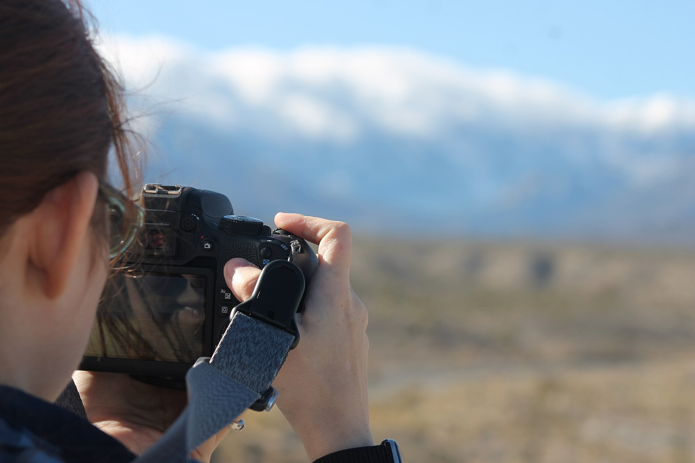
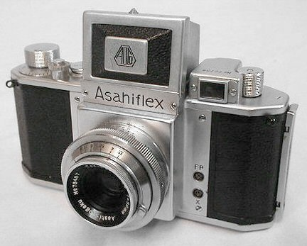
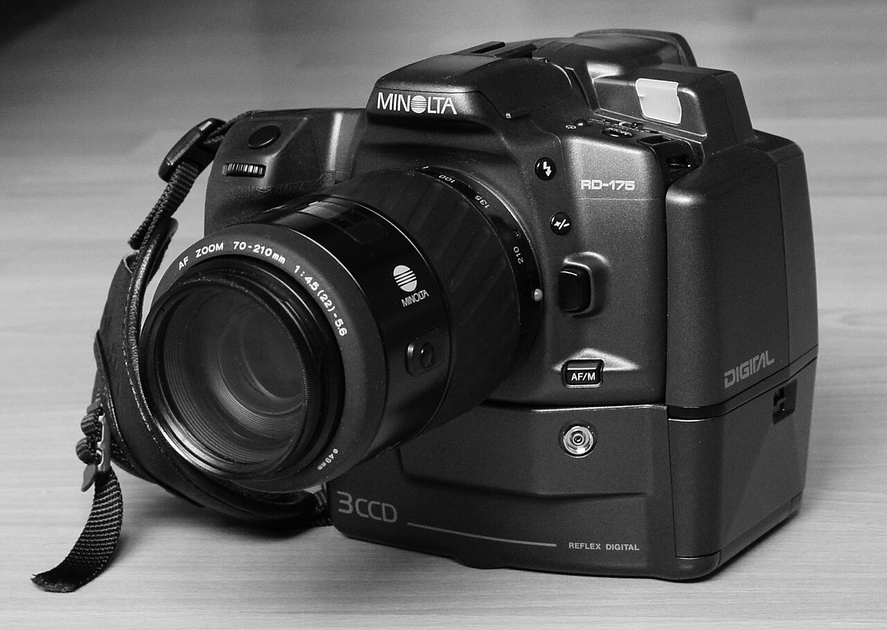

Fotografija je tehnika digitalnog ili hemijskog zapisivanja trenutaka iz stvarnosti na sloju materijala koji je osetljiv na svetlost koja na njega pada.
Reč dolazi od grčkog φως phos ("svetlo"), i γραφις graphis ("crtež"),koje zajedno znače otprilike "crtanje pomoću svetla".

Postoje dve vrste fotoaparata:Analogni i digitalni.
Analogni fotoaparati koriste Film osetljiv na svetlo da snime Fotografije,
a digitalni imaju senzore koji čuvaju tu fotografiju na memorijsku karticu.

